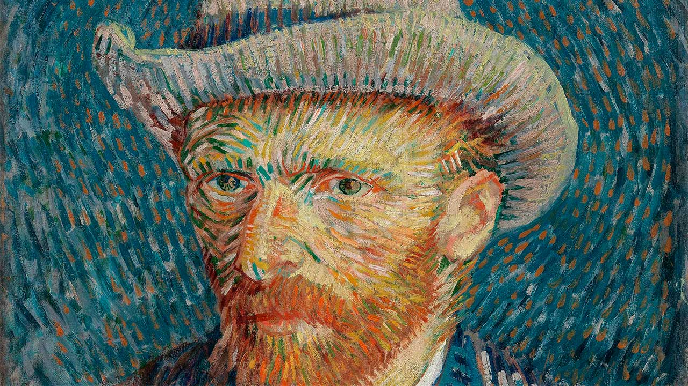

Vincent van Gogh, por quien el color era el símbolo principal de expresión, nació el 30 de marzo de
1853
en Groot-Zundert de Holanda. El hijo de un pastor, criado en una atmósfera religiosa y refinada,
Vincent
era muy emocional y no tenía confianza en sí mismo.
Se quedó en Bélgica a estudiar el arte, dedicado para dar felicidad creando belleza. Las obras de
este
período temprano en Holanda son pinturas de género muy iluminadas y de tonos sombríos de las que la
más
famosa es Los comedores de papas (1885).
En 1886 fue a París para unirse con su hermano Theo, el director de la Galería de Goupil. En París, Van
Gogh estudió con Cormon, conoció inevitablemente a Pissarro, Monet, y Gauguin, y empezó a dar más luz a
su paleta muy oscura y pintar en las brochadas cortas de los impresionistas. Su temperamento nervioso le
hizo un compañero difícil y las discusiones que duraron toda la noche, en combinación con pintando todo
el día, afectaron a su salud.
Decidió ir al sur de Arles donde tuvo la esperanza de abrir una escuela de arte con sus amigos. Gauguin
hizo el viaje a Arles pero el resultado fue un desastre. En el fin de 1888, después de un incidente,
Gauguin tuvo que salir de Arles. Van Gogh le persiguió con una cuchilla y fue parado por Gauguin, pero
se cortó una parte de su propia oreja. La vida de Van Gogh empezó a alternar entre los ataques de locura
y la lucidez. Van Gogh fue enviado al manicomio en Saint-Rémy para su tratamiento.
En mayo de 1890, sentía mucho mejor y fue a vivir en Auvers-su-Oise bajo el ojo atento de Doctor Gachet.
Murio dos meses después cuando se disparó a sí mismo “por el bien de todo.” Durante su carrera breve
vendió solamente una pintura. Las obras más finas de Van Gogh fueron producidas en menos de tres años
por una técnica que crecía más y más apasionada en la brochada, en color simbólico e intenso, en tensión
superficial, y en el movimiento y la vibración de forma y línea. La fusión inimitable de forma y
contenido de Van Gogh es poderosa, dramática, rítmica, imaginativa y emocional. El artista estaba
absorto completamente en el esfuerzo para explicar su lucha contra su locura o en la comprensión de la
esencia espiritual de hombre y naturaleza.